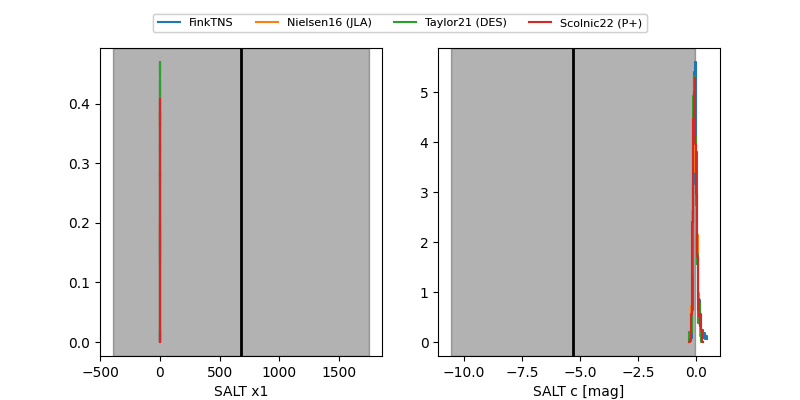

FINK: ZTF25abrcher
Lasair: ZTF25abrcher
ALeRCE: ZTF25abrcher
ZTF25abrcher (ztf,fink)
equatorial (ra, dec) = (119.5035,+4.62799)
galactic (l, b) = (216.4296,+16.91032)

last ztfr=19.00
4 ztfr detections